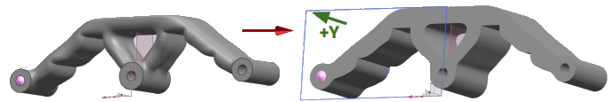
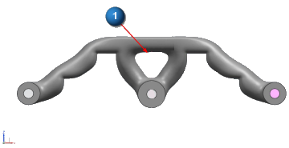
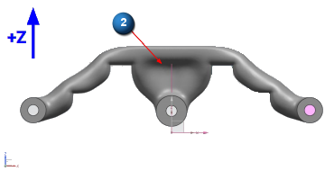

Manufacturing settings
To identify requirements for additive manufacturing as well as traditional manufacturing
methods, such as casting and milling, use the Generative Design tab→Generate group→Manufacturing Settings command  . This opens the Manufacturing Settings dialog box, where you set manufacturing constraints for material addition and removal
during optimization. You can choose either the material extrusion or the overhang
prevention option.
. This opens the Manufacturing Settings dialog box, where you set manufacturing constraints for material addition and removal
during optimization. You can choose either the material extrusion or the overhang
prevention option.
You can quickly see the manufacturing settings that were previously applied to an optimized part when you hover over the study name in the Generative Design pane to see the data tip:

Material Extrusion
To maintain a constant, cross-sectional thickness during optimization, select the Material Extrusion option. Use the lists to specify the axis and direction vector in which to constrain the addition of material.
Material Extrusion
-
None—This is the default option.
-
X
-
Y
-
Z
Direction
-
+
-
−
-
± (both)
Material is extruded in the +Y direction.

Overhang prevention
To prevent large regions of material from hanging over voids without sufficient support from the lower structure, select the Overhang Prevention axis option, and the X, Y, or Z axis from the adjacent list.
(1) shows a part that was optimized without overhang prevention.

(2) shows the same part with overhang prevention applied in the Z-axis direction.
